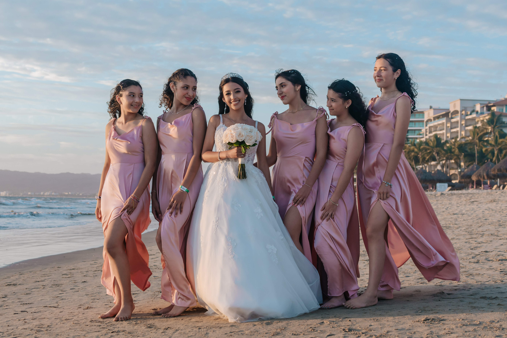

MY FRIENDS | |
|  | I have went to just two schools all my life, Yamane and San Patricio scince 2013. There I met my now 10 year friends, they are also one of the most important things in my life, they are for me when I need them. Without them I would not be able to survive, literaly. I love them with all my heart. |
She is a real one, she tells me things without filter. She gives me advices when I need it. Mya is actually the friend that I have spent more years with, we literally grew up with eachother. When we were starting middleschool we distanciate because we were separated by the groups, I still talked to her but not like in elementary. Now that she is in my group, she reminded me how much I missed her. She is really sarcastic, but fuuny. Sofia is everything, she never judges me when I do something wrong or weird. She changed schools when starting highschool, I REALLY miss her. She was my dynamic duo and still is, Sofia complements my personality, she gets me when no one does. She is like another me. I love Regina, she is literally perfect. She listens to me when I need her, make me laugh a lot. The words are unesessary to describe how much I care for her. |
Main Menu |